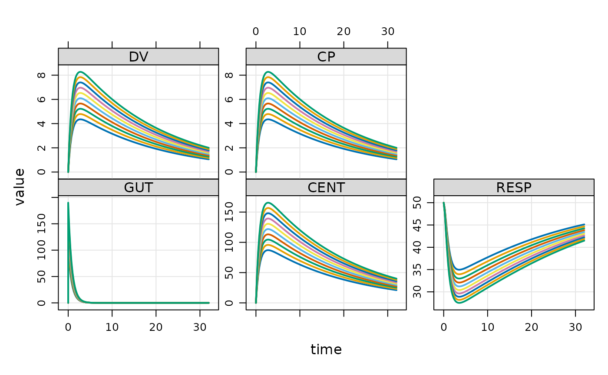

mrgsim.ds: 'Apache' 'Arrow' Dataset-Backed Simulation Outputs for 'mrgsolve'
Source:R/AAA.R
mrgsim.ds.Rdmrgsim.ds provides an Apache Arrow-backed
simulation output object for mrgsolve, greatly reducing
the memory footprint of large simulations and providing a high-performance
pipeline for summarizing huge simulation outputs. The arrow-based simulation
output objects in R claim ownership of their files on disk.
Those files are automatically removed when the owning object goes out of scope
and becomes subject to the R garbage collector. While "anonymous",
parquet-formatted files hold the data in tempdir() as you are working in
R, functions are provided to move this data to more permanent locations for
later use.
Package-wide options
mrgsim.ds.show.gc: print messages to the console when object files are removed prior to object cleanup.
Function listing
Load models
Generate Apache Arrow dataset-backed outputs
S3 Methods
Move, rename, or combine files
Save and restore
Ownership
Work with lists of outputs
Manage tempdir
Enter dplyr / arrow pipelines with
Coerce to R objects
Author
Maintainer: Kyle T Baron kylebtwin@imap.cc (ORCID) [copyright holder]
Examples
mod <- house_ds(end = 32)
data <- evd_expand(amt = seq(100, 300, 10))
out <- mrgsim_ds(mod, data)
out
#> Model: housemodel
#> Dim : 2,730 x 7
#> Files: 1 [129 Kb]
#> Owner: yes (gc)
#> ID TIME GUT CENT RESP DV CP
#> 1: 1 0.00 0.00000 0.00000 50.00000 0.000000 0.000000
#> 2: 1 0.00 100.00000 0.00000 50.00000 0.000000 0.000000
#> 3: 1 0.25 74.08182 25.74883 48.68223 1.287441 1.287441
#> 4: 1 0.50 54.88116 44.50417 46.18005 2.225208 2.225208
#> 5: 1 0.75 40.65697 58.08258 43.61333 2.904129 2.904129
#> 6: 1 1.00 30.11942 67.82976 41.37943 3.391488 3.391488
#> 7: 1 1.25 22.31302 74.74256 39.57649 3.737128 3.737128
#> 8: 1 1.50 16.52989 79.55944 38.18381 3.977972 3.977972
head(out)
#> # A tibble: 6 × 7
#> ID TIME GUT CENT RESP DV CP
#> <dbl> <dbl> <dbl> <dbl> <dbl> <dbl> <dbl>
#> 1 1 0 0 0 50 0 0
#> 2 1 0 100 0 50 0 0
#> 3 1 0.25 74.1 25.7 48.7 1.29 1.29
#> 4 1 0.5 54.9 44.5 46.2 2.23 2.23
#> 5 1 0.75 40.7 58.1 43.6 2.90 2.90
#> 6 1 1 30.1 67.8 41.4 3.39 3.39
tail(out)
#> # A tibble: 6 × 7
#> ID TIME GUT CENT RESP DV CP
#> <dbl> <dbl> <dbl> <dbl> <dbl> <dbl> <dbl>
#> 1 21 30.8 4.71e-14 67.3 37.2 3.36 3.36
#> 2 21 31 3.49e-14 66.4 37.3 3.32 3.32
#> 3 21 31.2 2.58e-14 65.6 37.4 3.28 3.28
#> 4 21 31.5 1.91e-14 64.8 37.5 3.24 3.24
#> 5 21 31.8 1.42e-14 64.0 37.6 3.20 3.20
#> 6 21 32 1.05e-14 63.2 37.8 3.16 3.16
plot(out, nid = 10)

list_temp()
#> 1 files [129 Kb]
#> - mrgsims-ds-1a0d1e533825.parquet
ownership()
#> > Objects: 1 | Files: 1 | Size: 129 Kb
if (FALSE) { # \dontrun{
rename_ds(out, "reg-100-300")
list_temp()
move_ds(out, "data/sim/regimens")
} # }